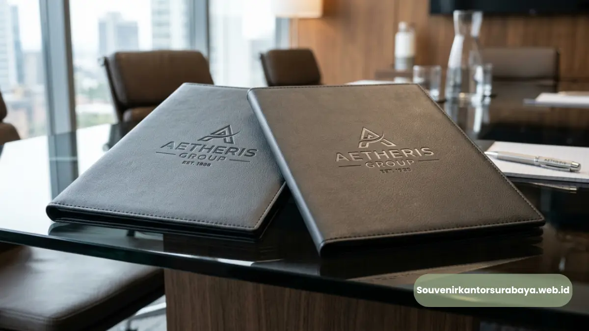

Map folder kulit sintetis custom logo perusahaan sebagai perlengkapan rapat kerja korporat di Surabaya.
- Apa Manfaat Custom Logo pada Map Folder Perusahaan?
- Bagaimana Custom Logo Mempengaruhi Kesan Profesional Perusahaan?
- Bagaimana Proses Cetak Logo pada Map Folder Kulit Sintetis?
- Apa Saja Tahapan Konsultasi Desain Sebelum Produksi?
- Apa Saja Pertimbangan Desain Logo untuk Map Folder?
- Bagaimana Cara Memesan Map Folder Custom Logo di Surabaya?
Map folder custom logo perusahaan adalah map kulit sintetis yang dicetak dengan identitas visual perusahaan, seperti nama brand atau logo resmi, untuk memperkuat citra korporat saat rapat kerja.
Di Surabaya, kebutuhan akan produk ini terus berkembang seiring meningkatnya perusahaan yang ingin tampil lebih profesional dan konsisten dalam setiap pertemuan bisnis. Custom logo pada map folder menjadikan perlengkapan kerja sekaligus sebagai media branding yang efektif.
- Custom logo pada map folder memperkuat identitas visual perusahaan.
- Teknik cetak yang umum digunakan meliputi embos, sablon, dan hot print.
- Desain logo perlu disesuaikan dengan ukuran dan bahan map folder.
- Custom logo dapat meningkatkan kesan profesional di mata klien dan mitra.
- Proses pemesanan meliputi konsultasi desain hingga hasil cetak akhir.
Apa Manfaat Custom Logo pada Map Folder Perusahaan?
Manfaat utama custom logo pada map folder adalah memperkuat identitas visual perusahaan sekaligus meningkatkan kesan profesional saat digunakan dalam rapat kerja maupun pertemuan dengan klien. Ketika logo perusahaan tercetak rapi pada map yang dibawa setiap karyawan, hal ini menciptakan konsistensi branding yang terlihat di berbagai kesempatan, mulai dari rapat internal hingga presentasi kepada calon mitra bisnis.
Selain nilai branding, custom logo pada map folder juga membantu membedakan dokumen perusahaan dari dokumen pihak lain saat berada dalam forum rapat gabungan atau seminar yang melibatkan banyak peserta dari berbagai instansi.
Bagaimana Custom Logo Mempengaruhi Kesan Profesional Perusahaan?
Custom logo yang dicetak rapi dan konsisten pada map folder memberikan kesan bahwa perusahaan memperhatikan detail hingga ke perlengkapan pendukung, bukan hanya pada produk atau layanan utamanya. Kesan ini secara umum dapat memengaruhi persepsi klien maupun mitra bisnis terhadap tingkat profesionalisme dan keseriusan perusahaan dalam menjalankan operasionalnya.
Baca Juga
Bagaimana Proses Cetak Logo pada Map Folder Kulit Sintetis?
Proses cetak logo pada map folder kulit sintetis umumnya dimulai dari pengumpulan file desain logo, penentuan teknik cetak yang sesuai, proses produksi, hingga quality control sebelum pengiriman. Teknik cetak yang umum digunakan pada bahan kulit sintetis meliputi embos (cetak timbul), sablon, dan hot print, yang masing-masing memiliki karakteristik tampilan berbeda.
- Embos: memberikan efek timbul pada logo, cocok untuk kesan elegan dan permanen.
- Sablon: menghasilkan warna solid dan cocok untuk logo dengan banyak warna.
- Hot print: memberi efek metalik seperti emas atau silver pada logo.
- Quality control: pengecekan hasil cetak sebelum dikirim ke perusahaan pemesan.
Apa Saja Tahapan Konsultasi Desain Sebelum Produksi?
Tahapan konsultasi desain sebelum produksi umumnya meliputi pengiriman file logo, diskusi peletakan posisi cetak, pemilihan teknik cetak yang sesuai, dan persetujuan desain akhir sebelum masuk proses produksi massal. Tahapan ini penting untuk memastikan hasil akhir sesuai dengan ekspektasi perusahaan sebelum diproduksi dalam jumlah besar.
Apa Saja Pertimbangan Desain Logo untuk Map Folder?
Pertimbangan desain logo untuk map folder meliputi ukuran logo yang proporsional dengan permukaan map, pemilihan warna yang kontras dengan warna dasar bahan, serta kesesuaian teknik cetak dengan kompleksitas desain logo. Logo dengan detail terlalu rumit sebaiknya disederhanakan agar hasil cetak tetap jelas dan rapi pada permukaan kulit sintetis.
- Ukuran logo: sesuaikan proporsi agar tidak terlalu besar atau kecil pada map.
- Warna logo: pilih warna yang kontras dengan warna dasar map folder.
- Tingkat detail: logo sederhana umumnya lebih mudah dicetak rapi dibanding desain rumit.
- Posisi cetak: umumnya diletakkan di bagian depan atau sudut map folder.
Bagaimana Cara Memesan Map Folder Custom Logo di Surabaya?

Detail hasil cetak logo embos pada permukaan map folder kulit sintetis yang presisi dan elegan.
Perusahaan di Surabaya yang ingin mencetak map folder dengan custom logo dapat langsung berkonsultasi melalui souvenirkantorsurabaya.web.id untuk menentukan teknik cetak, posisi logo, dan jumlah pesanan sesuai kebutuhan. Tim kami akan membantu memastikan hasil cetak logo sesuai dengan identitas visual perusahaan Anda.
Map folder dengan custom logo perusahaan menjadi cara efektif untuk memperkuat branding sekaligus memenuhi kebutuhan fungsional saat rapat kerja.
Dengan pemilihan teknik cetak dan desain yang tepat, map folder tidak hanya berfungsi sebagai alat kerja tetapi juga representasi profesionalisme perusahaan. Konsultasikan kebutuhan custom logo map folder perusahaan Anda melalui souvenirkantorsurabaya.web.id.

Hawa Nadira
Tim penulis CorporateGifts ID berfokus pada strategi souvenir kantor, merchandise korporat, dan inovasi brand untuk klien B2B.
Keahlian: Branding perusahaan, produksi souvenir, paket event, desain materi promosi.
Artikel Terkait

Vendor Map Folder Kulit Sintetis Rapat Kerja Surabaya
Vendor map folder kulit sintetis rapat kerja Surabaya menyediakan perlengkapan dokumen meeting korporat dan souvenir kantor custom logo.
Baca Selengkapnya
Paket Map Folder Kulit Sintetis untuk Rapat Kerja
Paket map folder kulit sintetis untuk rapat kerja menyediakan perlengkapan meeting lengkap berisi map, notes, pena, dan slot kartu nama.
Baca Selengkapnya
Perbedaan Kulit Asli dan Sintetis pada Souvenir Kantor Eksekutif
Panduan komparasi material kulit asli vs sintetis untuk menentukan pilihan souvenir kantor eksekutif yang sesuai budget dan daya tahan.
Baca Selengkapnya